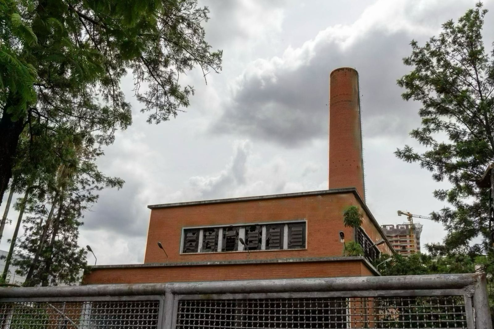

<div class="container mb-5">
    <div class="my-historia-s2-row row align-items-center">


        <!-- Parte 1 -->
        <div class="col-md-4">
            
        </div>


        <!-- Parte 2 -->
        <div class="col-md-8">
            <h5 class="my-historia-s2-incineradorVergueiro">Incinerador Vergueiro</h5>
            <div><br></div>

            <div class="my-historia-s2-texto">
                <p>
                    O Incinerador Vergueiro, localizado no Ipiranga, zona sul de São Paulo, foi um dos três incineradores da cidade. Iniciou suas atividades em 1968, a princípio para lixo doméstico, posteriormente incluindo lixo hospitalar a partir de 1977. Ativo até 2002, o Incinerador Vergueiro desempenhou um papel significativo na história da coleta de lixo em São Paulo, chegando a incinerar cerca de 50 toneladas diárias.
                </p>
                <p>
                    O bairro do Ipiranga, predominantemente industrial, testemunhou o crescimento do descontentamento com o Incinerador, cujas fumaças atingiam um raio de 10 km, afetando até cidades vizinhas. A população protestou intensamente na década de 90 e início dos anos 2000, destacando a inadequação ambiental do Incinerador. Em 2000, um protesto bloqueou a entrada de caminhões, levando o poder público a avaliar o incinerador.
                </p>
                <p>
                    O laudo de dezembro de 2000 revelou a presença de coliformes fecais, bacteriófagos e substâncias tóxicas nas cinzas, invalidando sua eficácia na esterilização do lixo. Detectou-se também a liberação de substâncias cancerígenas nas fumaças. Pressionada, a prefeitura assinou um Termo de Ajustamento de Conduta Ambiental, reduzindo a média diária de lixo para 6 toneladas. Em dezembro de 2001, ocorreu a última queima.
                </p>
            </div>
        </div>
    </div>
</div>